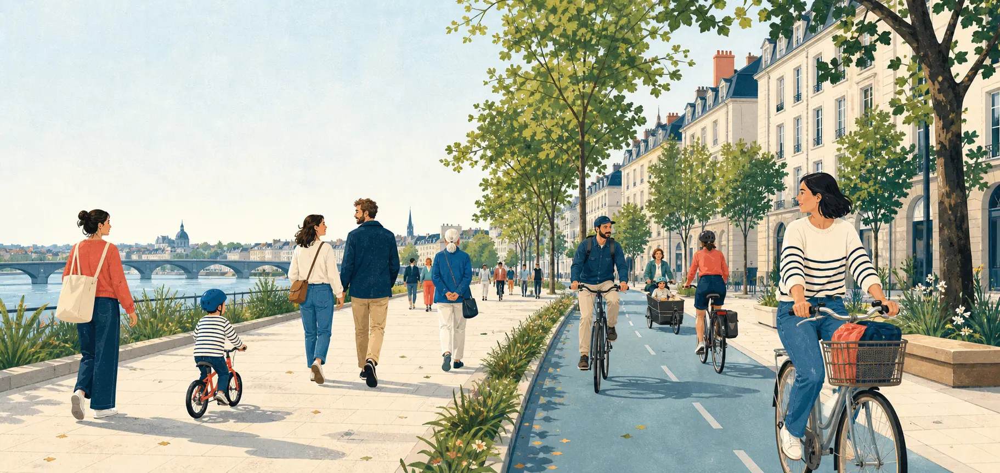

Plaidoyer local
Nous interpellons les décideurs et participons aux débats publics pour faire avancer les mobilités actives.
Association nantaise
Nous défendons une métropole où chacune et chacun peut marcher et pédaler en sécurité, librement et confortablement.

Nantes Métropole
24 communes à relier
Notre cap
La rue est notre bien commun.
Rue Commune est une association indépendante d’intérêt général. Elle porte la voix des personnes qui marchent et pédalent dans Nantes Métropole, quels que soient leur âge, leur quartier ou leurs capacités.
Notre action lie mobilité, santé publique, climat et qualité de vie. Parce qu’une rue apaisée n’est pas seulement un trajet plus sûr : c’est une ville plus proche, plus autonome et plus vivante.
Chaque don finance nos actions de terrain, en toute indépendance.
Faire un donSur le terrain
Observer. Proposer. Mobiliser.
Nous interpellons les décideurs et participons aux débats publics pour faire avancer les mobilités actives.
Nous documentons les usages, publions des analyses et formulons des propositions concrètes.
Nous informons, orientons et soutenons les personnes confrontées aux violences et incivilités routières.
Nous organisons des campagnes et créons des alliances pour peser collectivement sur les choix d’aménagement.
Nos principes
Nos orientations ne dépendent d’aucun parti, financeur, entreprise ou autorité publique.
Nous appuyons nos positions sur les faits, les usages et l’expérience quotidienne du terrain.
Nous coopérons largement dès lors que notre autonomie et nos valeurs sont respectées.
Rejoignez les adhérentes et adhérents qui font avancer la marche et le vélo à Nantes.
AdhérerPresse
Un pas, un coup de pédale, une voix.
Adhérez, partagez une situation de terrain ou venez prêter main-forte.
Chaque contribution rend notre action plus forte.